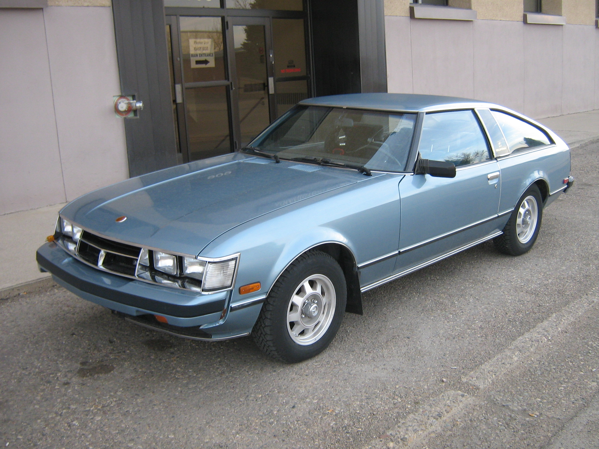
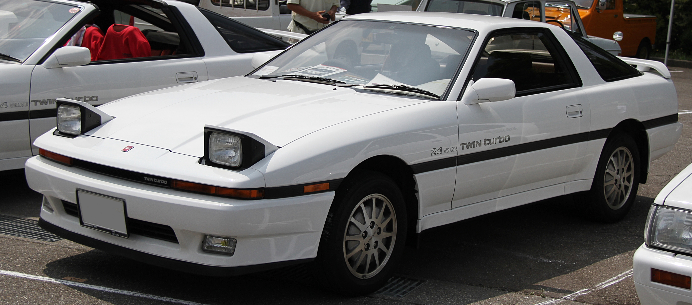
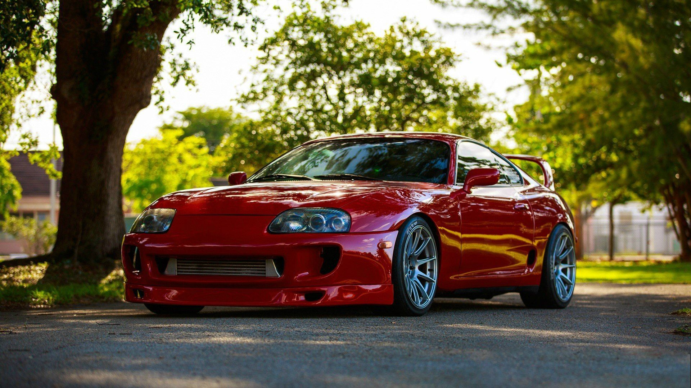
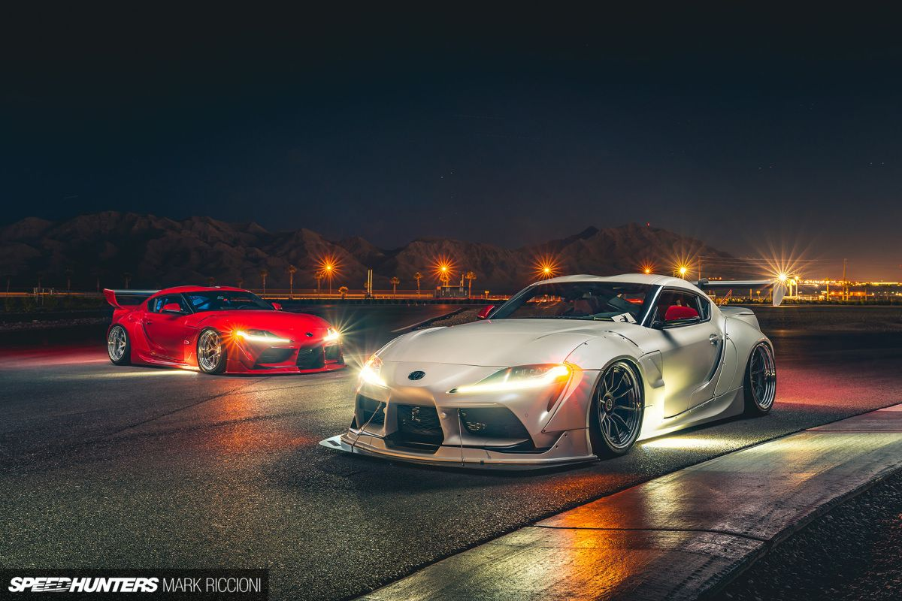
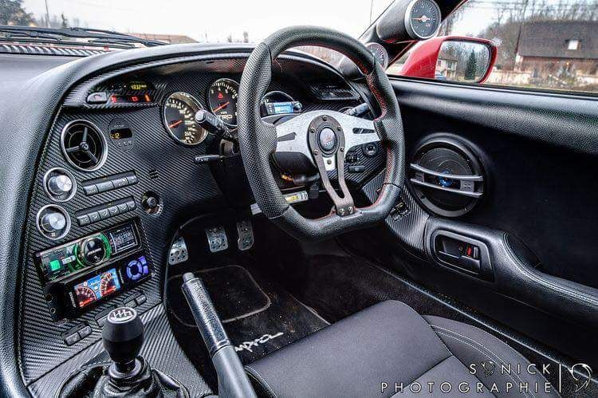
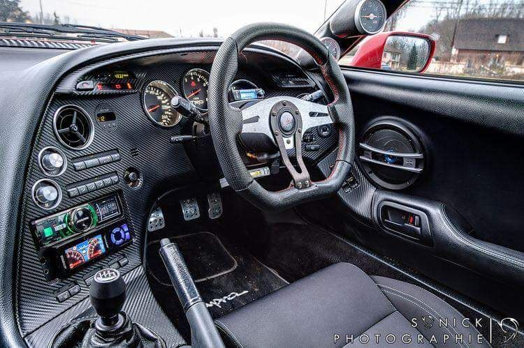
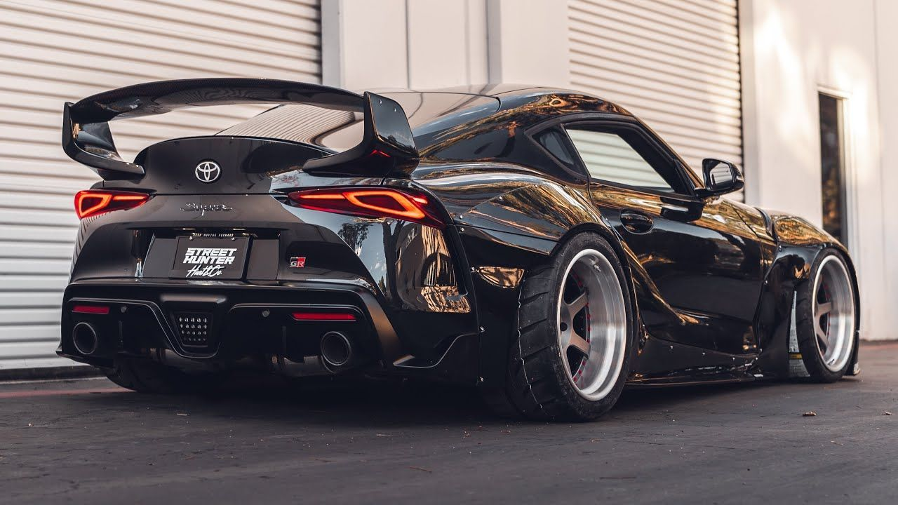
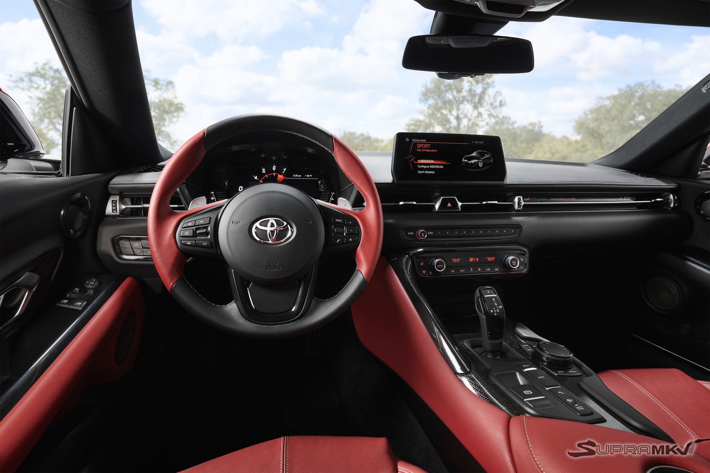

Toyota Supra
The Toyota Supra (Japanese: トヨタ・スープラ) is a sports car and grand
tourer manufactured by the Toyota Motor Corporation beginning in 1978.
The name "supra" is derived from the Latin prefix, meaning "above", "to
surpass" or "go beyond".
The initial four generations of the Supra were produced from 1978 to
2002. The fifth generation has been produced since March 2019 and went
on sale in May 2019. The styling of the original Supra was derived from
the Toyota Celica, but it was both longer and wider. Starting in
mid-1986, the A70 Supra became a separate model from the Celica. In
turn, Toyota also stopped using the prefix Celica and named the car
Supra. Owing to the similarity and past of the Celica's name, it is
frequently mistaken for the Supra, and vice versa. The first, second and
third generations of the Supra were assembled at the Tahara plant in
Tahara, Aichi, while the fourth generation was assembled at the
Motomachi plant in Toyota City. The 5th generation of the Supra is
assembled alongside the G29 BMW Z4 in Graz, Austria by Magna Steyr.
The Supra traces much of its roots back to the 2000GT owing to an
inline-6 layout. The first three generations were offered with a direct
descendant to the Crown's and 2000GT's M engine. Interior aspects were
also similar, as was the chassis code "A". Along with this name, Toyota
also included its own logo for the Supra. It was derived from the
original Celica logo, being blue instead of orange. This logo was used
until January 1986, when the A70 Supra was introduced. The new logo was
similar in size, with orange writing on a red background, but without
the dragon design. That logo, in turn, was on Supras until 1991 when
Toyota switched to its current oval company logo. The dragon logo was a
Celica logo regardless of what colour it was. It appeared on the first
two generations of the Supra because they were officially Toyota
Celicas. The dragon logo was used for the Celica line until it was also
discontinued.
In 1998, Toyota ceased sales of the fourth generation of the Supra in
the United States. Production of the fourth generation of the Supra for
worldwide markets ended in 2002. In January 2019, the fifth generation
of the Supra, which was co-developed with the G29 Z4, was introduced.
There are 5 generations of the Toyota Supra
- First generation (A40/A50; 1978) 
-
Second generation (A60; 1981)

- Third generation (A70; 1986) 
- Fourth generation (A80; 1993) 
- Fifth generation (J29/DB; 2019) 
But the most popular of these are the mk4 A80 Supra and the mk5 A90 Supra.
About the mk4 Supra
The A80 program began in February 1989 under various teams for design,
product planning, and engineering led by Isao Tsuzuki. By the middle of
1990, a final A80 design concept from Toyota Technical Centre Aichi was
approved and frozen for production in late 1990. The first test mules
were hand-built in A70 bodies during late 1990, followed by the first
A80 prototypes being hand-assembled in 1991.
Again using subframe, suspension, and drivetrain assemblies from the Z30
Soarer (Lexus SC300/400), pre-production of the test models started in
December 1992 with 20 units made, and official mass production began in
April 1993. The fourth generation of the Supra again shared its platform
with the upscale Soarer coupe, sold in the U.S. as the Lexus SC.
Although the two cars looked similar dimension-wise, the new Supra was
more than 13 inches (340 mm) shorter than its luxurious cousin.
This redesign saw Toyota placing great emphasis on a more serious
high-performance car. The A80 featured two new engines: a naturally
aspirated Toyota 2JZ-GE having a power output of 164 kW (220 hp; 223 PS)
at 5,800 rpm and 210 lb⋅ft (285 N⋅m) at 4,800 rpm of torque and a twin
turbocharged Toyota 2JZ-GTE having a power output of 206 kW (276 hp; 280
PS) and 318 lb⋅ft (431 N⋅m) of torque for the Japanese model. For the
export model (American/European markets) Toyota upgraded the Supra
turbo's engine (by installing smaller, steel wheeled turbochargers and
bigger fuel injectors, etc.). This increased the power output to 239 kW
(321 hp; 325 PS) at 5,600 rpm and 315 lb⋅ft (427 N⋅m) of torque at 4,000
rpm (243 kW (326 hp; 330 PS) and 325 lb⋅ft (441 N⋅m) for European
markets) Upon its launch in 1993, it was the first Toyota-badged vehicle
to include a passenger airbag as standard (US-market only).
 

About the mk5 Supra
The fifth-generation Supra was released in January 2019 after 17 years
off the market as the GR Supra, part of Toyota's Gazoo Racing (GR)
family of performance cars. It was developed in partnership with BMW,
sharing the platform and many parts from the BMW Z4 (G29) with BMW
derived 4- and 6-cylinder turbocharged engines and maintaining
rear-wheel drive layout from the previous Supra. The model is designated
with BMW model codes "J29" or "DB", however Toyota used the "A90" and
"A91" codes for promotional and marketing materials for the
fifth-generation Supra to maintain the lineage from the previous Supra.
The GR Supra is manufactured at the Magna Steyr plant in Graz, Austria
alongside the Z4.
The fifth-generation Toyota Supra was launched in total seven color
options including CU Later Gray, Stratosphere, Burnout, Absolute Zero,
Nocturnal, Renaissance 2.0, and Nitro Yellow. Apart from the cosmetics,
in the year 2023, new driving modes are introduced called Hairpin+. This
modes allows additional wheel-spin on one of the rear tire to help
rotate the Supra around ultra-tight hairpin turns.
 